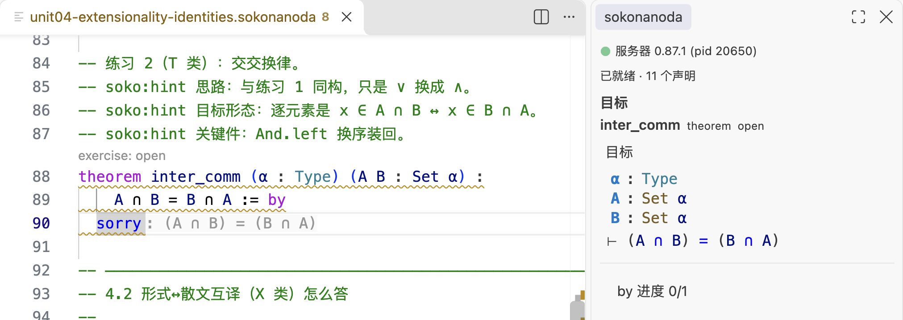

sokonanoda · 形式化证明教学语言
像写数学证明一样，一句一句写：目标实时可见，写错了 内核告诉你。不用先学会一整套证明助手，也不用装工具链 —— 装一个 VS Code 插件就能开始。

sorry 上，右边是内核算出来的目标。图里没有任何摆拍内容。
01它是什么
- 判定走真内核，不是对答案 你写的证明由完整内核重新检查一遍：接受就是接受，拒绝就给出诊断。 不是文本比对，也不是模型打分 —— 你看到绿色，是因为它真的算过。
-
目标实时可见
光标停在
sorry上，面板就显示此刻要证的东西 （⊢ (A ∩ B) = (B ∩ A)）和手里已有的假设 —— 像纸上的推导一样， 每一步都知道自己在证什么。 -
语法是 Lean 4 的子集
逻辑连接符、集合记法、
by与 tactic、归纳类型、宇宙、 多文件import都按 Lean 4 的写法来。你在这里练的写法， 在 Lean 4 里成立。
02怎么开始
-
装插件
在 VS Code 里搜
sokonanoda，或者点上面的 安装按钮。 扩展里自带判卷内核与命令行，不用装 Rust、不用装 Lean 工具链。 -
把教材拉下来，打开一个课程文件
课程就是一堆
.sokonanoda文件：一份文件里既有讲解、也有留了sorry的练习。git clone https://github.com/ColorlessBoy/sokonanoda-lang code sokonanoda-lang/course/unit1-propositions-proofs.sokonanoda
-
把 sorry 填成证明
光标停在
sorry上会看到目标；一行一行往下写，写对了内核放行， 写错了它会说清楚哪里不对。卡住就看同目录的提示，或者翻开解答。
03教材
两门课，都在仓库里，都能离线做：每个单元是一份可编译的画布
（讲解 + 带 sorry 的练习 + 提示），旁边配一份同构的解答。
-
入门课 · 十一个单元
从「命题与证明项」「等式与
rfl」讲到函数、by写法、 宇宙、归纳与递归、量词、关系与联结词，最后落到模块与项目。 第一次接触形式化证明就从这里开始。打开
course/11 个单元 -
卷 I《集合论》
13 章、112 个单元画布：集合、子集与集合运算 → 关系、函数与基数 → 序关系与序数 → 选择公理与 ZF → 集合代数 → 关系的代数。 配一份课程标准库
lib/（引理名照 Mathlib 取证），一路走到 Cantor 定理与 Russell 悖论。学完入门课再来。打开
courses/set-theory/13 章 · 112 个单元
04它和 Lean 4 的关系
这里的教学语法是真实 Lean 4 的子集：∀ ∃ ∧ ∨ ¬ → ↔、
a ∈ A / A ⊆ B / A ∩ B 这些记法、
by 加 intro / exact / apply /
cases / constructor 这些 tactic、归纳类型与递归、
宇宙 Type u、多文件 import —— 都按 Lean 4 的写法。
差别只在范围：这里只有教一节课需要的那部分（没有类型类、 没有 tactic 宏、没有 mathlib），判定由本项目的内核给出。所以 你在这里练的写法，在 Lean 4 里成立；反过来不成立的地方， 文档里会明说。